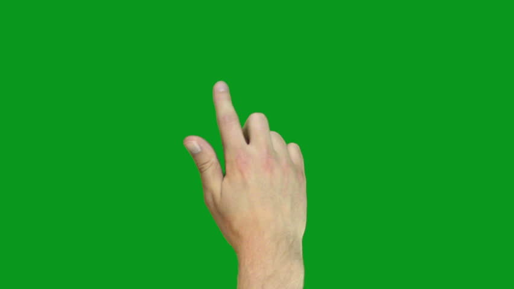
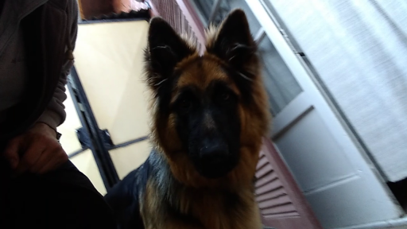
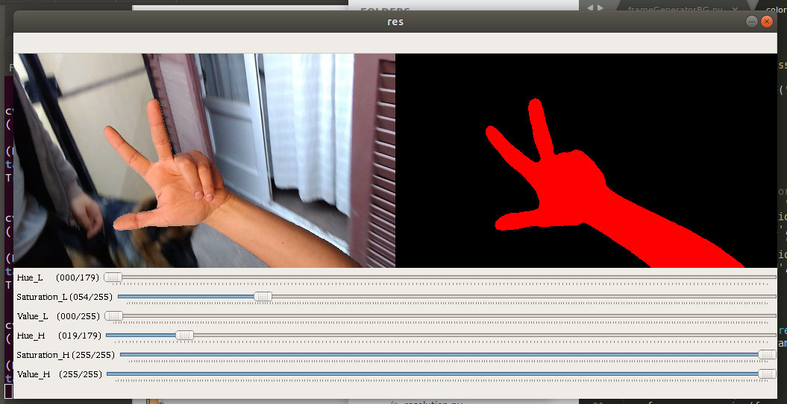
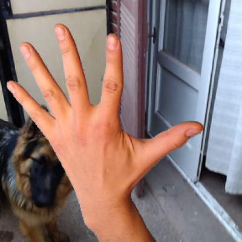

Build a image DataSet with OpenCV

When I was studying "Deep Learning, a 5-course specialization by deeplearning.ai on Coursera."
I had the idea of practicing the knowledge acquired by performing a simple game, rock paper
scissors lizard spock. So I started by getting a DataSet that
meets my needs. Since I didn't find any, I decided to create it.
In this article, I will explain the basics of how to perform an Image DataSet with OpenCV.
The beginning:
 The main idea is to generate images from videos using the green background masking technique. The milestones I proposed are: First, to generate an image extractor from video, said sketch would be used to generate the background images that would replace the color green. second, make a sketch that takes images from a video with a green background, allows you to select the mask that separates the hand gesture, and paste it into a random background image.
The background Generator:
 The first task is to make an image extractor from a video. This is Akane, my dog, I generated the image from a video that I plan to use for background. To start, I took my cell phone and recorded three videos of approximately 20 seconds in different rooms of my house. Next the code:
import cv2 as cv
import random
import os
# our folder path containing some background videos
folder_path = 'VideosBG'
# the output folder for the images
folder_image = 'ImagesBG'
total = 0
# loop on all files of the folder and build a list of files paths
videos = [os.path.join(folder_path, f) for f in os.listdir(folder_path) if os.path.isfile(os.path.join(folder_path, f))]
# show the list of videos
print(videos)
# loop on videos
for video in videos:
cap = cv.VideoCapture(video)
while(1):
# Take each frame
ret, frame = cap.read()
# if the video end break loop to take the next video
if ret is False:
break
# rezise to a quarter
frame = cv.resize(frame, None, fx=.4, fy=.4, interpolation=cv.INTER_AREA)
# create the image path and name
p = os.path.sep.join([folder_image, "{}.png".format(
str(total).zfill(5))])
# save the image in the path
cv.imwrite(p, frame)
# count the total image
total += 1
# show the image
cv.imshow('res', frame)
# press q to abort
k = cv.waitKey(1)
if k == ord('q'):
break
cv.destroyAllWindows()
The code is simple, first load all the videos into the input folder, then loop through each video, generate a capture of the selected video, change the resolution to a value closer to the one we will use as input in our model (i use 40% downsize), and save the image.
The Mask:
 A big problem that I found though simple was that the green paper I bought was glossy, this generated green highlights on the edges of the hand. The simplest solution was to buy matte paper and perform the scenes again. The second great recommendation is until HSV coding instead of RBG, this facilitates the selection of the color range with the trackbars. On the left you can see a screenshot of the output, the bars allow you to select the parameters HSV that the mask will apply. Next I leave the core of the code.
# define range of green color in HSV
lower_green = np.array([Hue_L, Saturation_L, Value_L])
upper_green = np.array([Hue_H, Saturation_H, Value_H])
# Threshold the HSV image to get only green colors
mask = cv.inRange(hsv, lower_green, upper_green)
maskinv = 255 - mask
# Bitwise-AND mask and original image
resfg = cv.bitwise_and(frame, frame, mask=maskinv)
resbg = cv.bitwise_and(framebg, framebg, mask=mask)
# add the two mask images
res = cv.add(resfg, resbg)
OpenCV allows us to add trackbar in a simple way, once obtained the values of the trackbar, we put together two numpy array, 'lower_green' and 'upper_green', cv.inRange() together with the values allows us to generate the mask that we will apply.  'maskinv' will help us to join the images, since the hand is cut from the bottom, from the background we need to cut the silhouette of the hand. To apply the mask, we use the bitwise_and() function on 'frame' which is the image by hand and on 'framebg' which is the random background image. Finally we join both images in one, on the left we can see as an example an output image. In the sketch I make two loops for each input video, one where we select the HSV values for the mask and another where they are taken to the desired output resolution and saved.